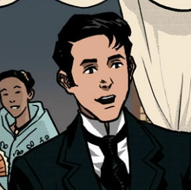
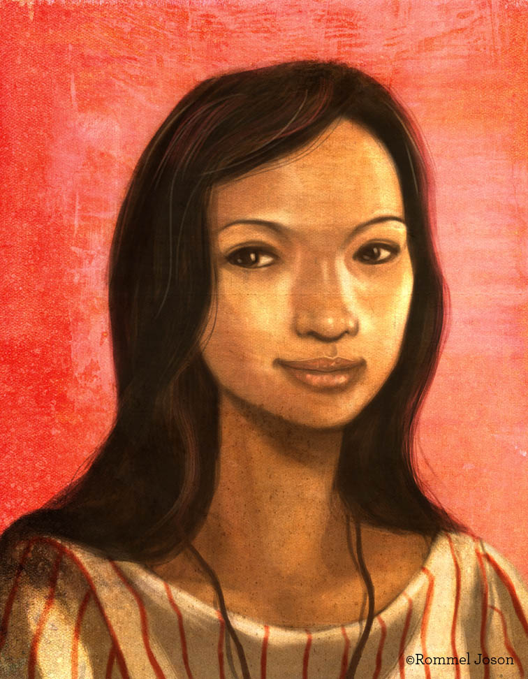

|  |
Crisostomo Ibarra |
Juan Crisostomo Ibarra y Magsalin is a student from San Diego, after he returned to his home town, he wants to achieve his father's wish. A school, but he faces numerous obstacles and challengers from certain people.
|
 |
Maria Clara |
Maria Clara de los Santos, the daughter of Padre Damaso. She is a woman of a high social status.
|
 |
Kapitan Tiago |
Kapitan Tiago is a wealthy and influential man,which makes him a well respected person. He is also the one who adopted Maria Clara.
|
 |
Padre Salvi |
Padre Salvi is a Friar in San Diego, he abuses his power of being a Friar/Priest then later on manipulates the townspeople.
|
 |
Sisa |
Sisa is the mother of Basilio and Crispin, abused by her husband lost her sanity after her sons disappeared.
|
 |
Padre Damaso |
Padre Damaso is the biological father of Maria Clara, and was the previous town curate before Padre Salvi got his role.
He abuses his power being a friar/priest and has a tyrannical behavior towards Filipinos.
|
 |
Pilosopo Tasio |
Pilosopo Tasio is an old scholar and people think he is an out of mind/ a mad man because of his studies.
|
 |
Elias |
Elias is a mysterious man who lives on a boat with his wife, hiding from authorities.
|
|  |
Salome |
Salome is a young girl who lives in San Diego with her sweetheart Elias, she wants to move to Mindoro with Elias to meet her family have a normal life there.
|